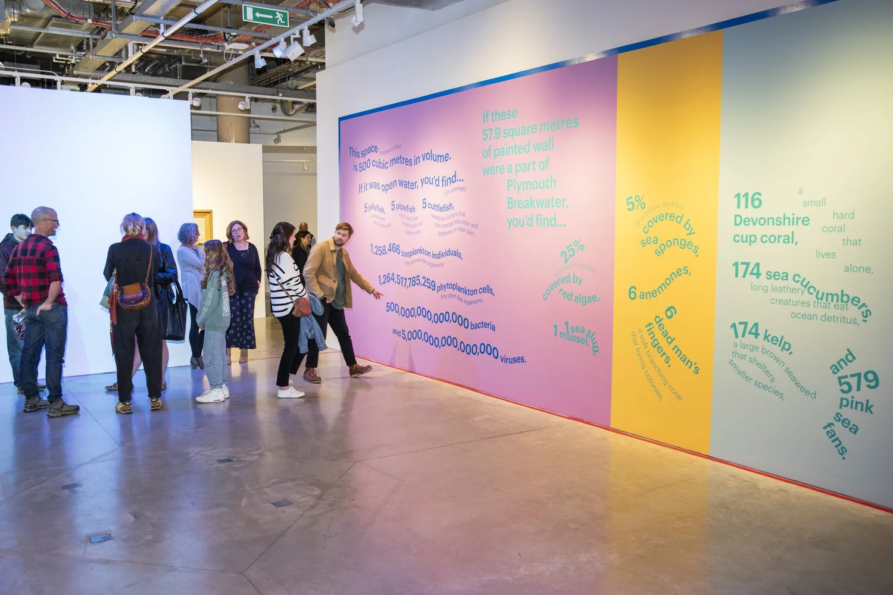
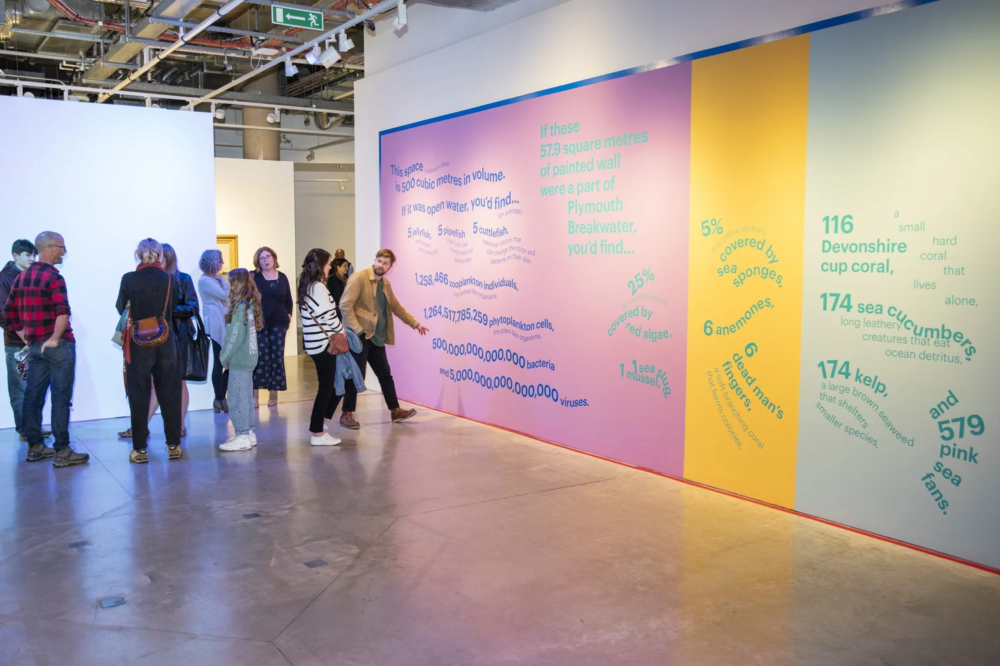

500 m3 of sea
 2023
2023
 Galerie Levinsky, Université de Plymouth, Plymouth, Royaume-Uni
Galerie Levinsky, Université de Plymouth, Plymouth, Royaume-Uni
Ce projet, réalisé dans le cadre de l'exposition "Ocean" à l'Université de Plymouth, avait pour but de mettre en avant les merveilles de l'océan, et plus précisément celles de la baie de Plymouth Sound, en créant une expérience de données immersive. Pour ce faire, Stefanie Posavec a tout d'abord mesuré l'espace de la galerie Levinsky de l'université, et a déterminé qu'elle pouvait contenir un volume de 500 mètres cubes d'eau. Elle a ensuite matérialisé ce volume avec une ligne de ruban adhésif bleu qui traversait les murs, les fenêtres et les portes. Pour représenter la vie marine de la zone du Plymouth Breakwater (brise-lames en pierre qui protège la baie), Stefanie Posavec a recueilli des données scientifiques sur ses animaux (comme le phytoplancton et les éponges marines par exemple), qu'elle a ensuite visualisées à l'aide de peinture sur les murs et le sol de la galerie. L'œuvre finale invitait le visiteur à marcher dans cet espace et à s'imaginer le fond de la mer.
 
